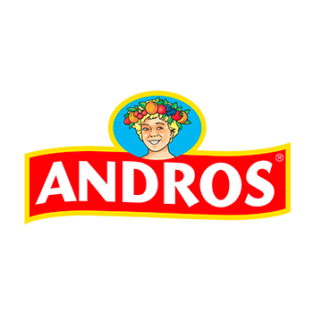
Alternance — Andros
En cours- Etude et mise en place d'une station de décontamination USB.
- Intégration d'une filiale dans l'outil Nessus afin de scanner les vulnérabilités des différentes machines.
Résultats : En cours.
Étudiant en Master Cybersécurité
Actuellement en 1re année de Master Cybersécurité au CNAM d’Angers, je poursuis mon parcours en alternance au sein de l’équipe cybersécurité d’Andros.
Diplômé d’un BUT Réseaux & Télécommunications, j’ai développé de solides compétences en infrastructures réseau, systèmes et sécurité. Je mets aujourd’hui ces compétences au service de la sécurisation des systèmes d’information, en participant aux différents enjeux et projets liés à la cybersécurité au sein du groupe Andros.

Diplômé d’un BUT Réseaux et Télécommunications, parcours Cybersécurité, je poursuis aujourd’hui mes études en première année de Master Cybersécurité au CNAM à Angers, en alternance au sein du groupe Andros.
Mon parcours m’a permis de développer de solides bases en réseaux, systèmes et cybersécurité, ainsi que des qualités telles que l’autonomie, la rigueur, l’adaptabilité et l’esprit d’équipe.
À travers mon Master et mon expérience en alternance, je souhaite approfondir mes connaissances et développer une expertise dans la sécurisation et la protection des systèmes d’information, tout en confrontant mes acquis à des problématiques concrètes en entreprise.
Curieux et motivé, je souhaite continuer à développer mes compétences dans les domaines des réseaux et de la cybersécurité et construire progressivement mon projet professionnel dans ce secteur.
Cette poursuite d'études me permettra ainsi de continuer à développer mes compétences en cybersécurité tout en mettant en pratique mes connaissances au sein d'Andros.
En alternance chez Andros dans l'équipe Cybersécurité, dans la continuité du BUT Réseaux et Télécommunications.
IUT d'Aubière (63) — option Cybersécurité
Mention Assez bien

Résultats : En cours.
Résultats : L'outil à été étudié et mis en place avec succès.
Résultats : Toutes les tâches ont été réalisées avec succès et rigueur.
Résultat : Missions réalisées avec rigueur et satisfaction de l’employeur.
Ces cinq domaines correspondent aux compétences attendues en BUT Réseaux et Télécommunications.
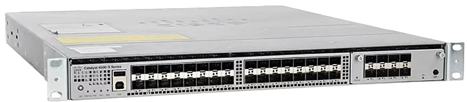
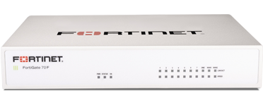
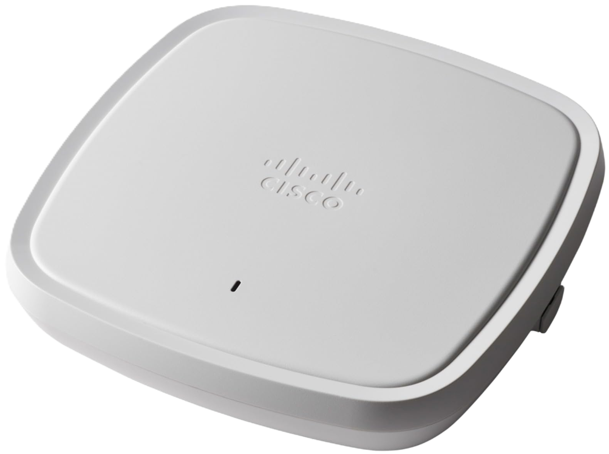


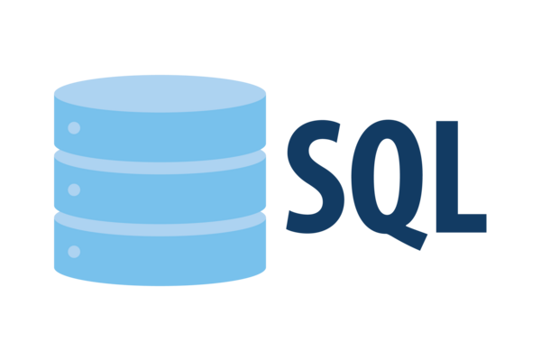
Dans la pratique de la pêche, il faut savoir s'adapter aux conditions qui peuvent être changeantes. Par exemple, si le vent se lève, il peut être nécessaire de changer de leurre ou de technique de lancer.
Lors de ma pratique du badminton, j'ai pu faire des matchs en double. J'ai dû faire preuve d'esprit d'équipe afin d'élaborer des stratégies pour déstabiliser les adversaires.
J'ai pu développer cette qualité notamment lors de mon stage chez Andros. En effet, j'ai dû faire preuve d'autonomie pour la réalisation de mes objectifs, mon tuteur de stage n'étant pas toujours disponible lorsque je rencontrais des difficultés.
La rigueur a été très importante lors de mon stage chez Andros, notamment pour le respect des procédures ainsi que pour la réalisation de mes objectifs.
Anglais : niveau B1.
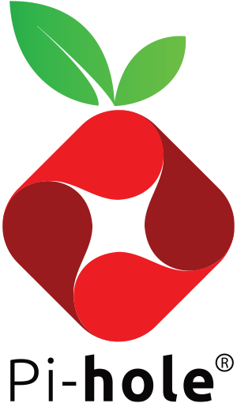
Travail pratique réalisé en autodidacte.
Objectifs : mettre en place un serveur DNS local filtrant publicités et domaines malveillants, et améliorer la sécurité des appareils du réseau local.
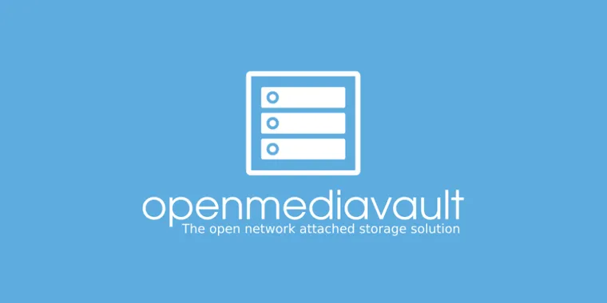
Travail pratique réalisé en autodidacte.
Objectifs : installer et configurer le serveur sur le réseau local, et mettre en place un accès distant sécurisé aux fichiers.
Travail pratique réalisé en binôme.
Objectifs : reproduire un environnement informatique d'entreprise à l'aide de machines virtuelles, puis mettre en œuvre un scénario d'attaque afin d'identifier les vulnérabilités et de retracer les différentes étapes d'une compromission.
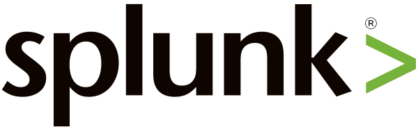
Travail pratique réalisé individuellement.
Objectifs : mettre en place une solution de supervision de la sécurité permettant de centraliser, analyser et exploiter les événements provenant des différents systèmes d'une infrastructure informatique.
Travail pratique réalisé en binôme.
Objectifs : identifier et exploiter les vulnérabilités présentes sur des machines de test volontairement vulnérables afin d'évaluer leur niveau de sécurité.
Travail pratique réalisé en groupe de 5.
Objectifs : concevoir et mettre en place une infrastructure correspondant au réseau d'une petite entreprise.
Travail pratique réalisé en binôme
Objectifs : observer les connexions TCP, créer un paquet TCP de demande de connexion et réaliser un outil de scan de ports.
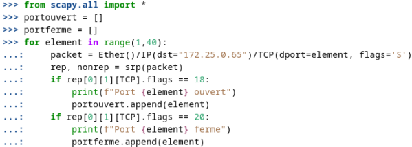
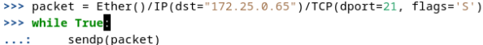
Travail pratique réalisé en binôme.
Objectifs : installer et configurer un point d'accès IEEE-802.11, et mettre en place une sécurité d'accès.
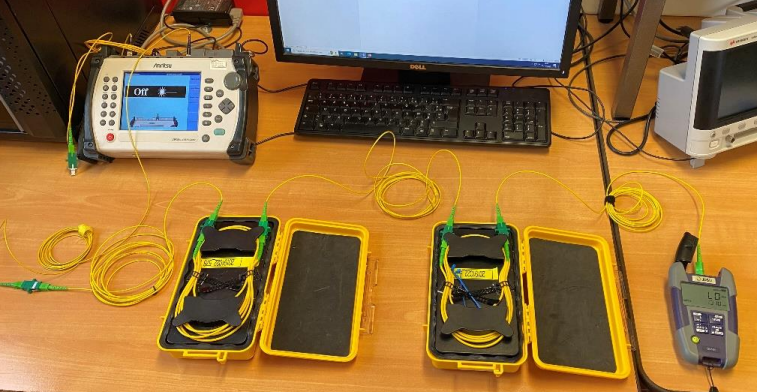
Travail pratique réalisé en binôme, pendant 3 heures.
Objectifs : comprendre les mesures en photométrie et en réflectométrie sur une fibre optique, savoir calculer puissance et atténuation.

Travail pratique réalisé individuellement.
Objectifs : réaliser des simulations numériques avec MATLAB.
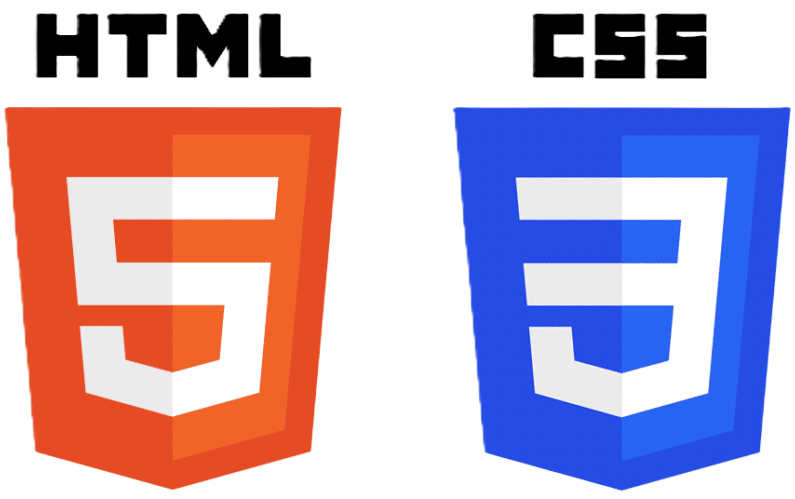
Travail pratique réalisé individuellement.
Objectifs : comprendre l'utilisation des balises HTML et s'en servir pour écrire le code CSS.
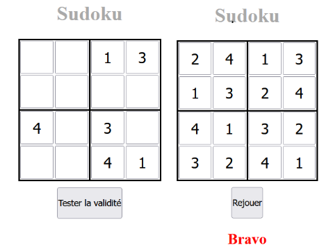
Travail pratique réalisé individuellement.
Objectifs : apprendre les bases du langage PHP.
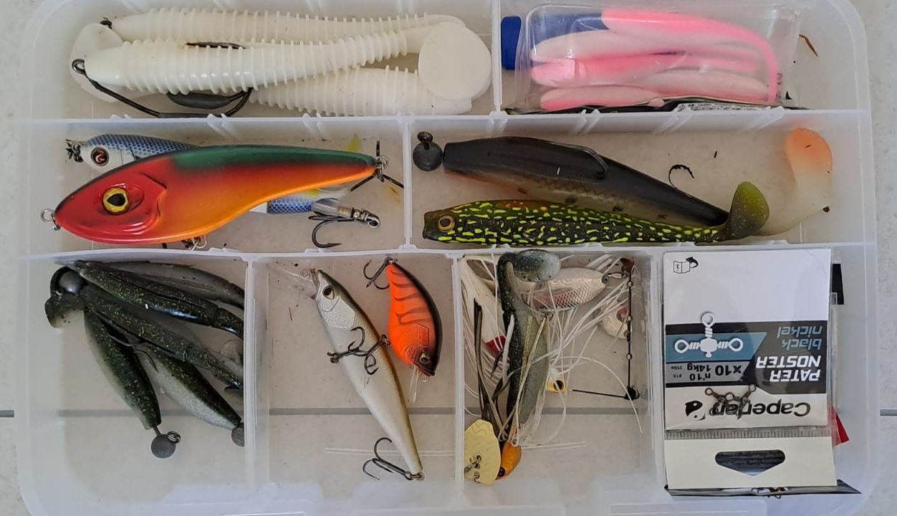
Pratique depuis début 2022.
Pratiqué en 2021 et 2022 à Terrasson-Lavilledieu (24).
Formule 1 et MotoGP, en spectateur.
Pendant les vacances pour découvrir de nouvelles régions, et par loisir en famille à la campagne.
Une question, une opportunité d'alternance ou de stage ? N'hésitez pas à me contacter.
Écrire un email Télécharger le CV